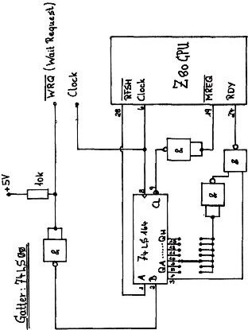

Nascom Journal |
Dezember 1981 · Ausgabe 11/12 |
stehen dem Benutzer zehn zusätzliche Befehle zur Verfügung, um die Möglichkeiten des Betriebssystems zu erweitern.
Die Anfangsadresse des DEBUG ist #C000. Es benötigt den Disassembler bei #C400.
Der Bereich von 0E00 bis 0EFF wird von Disassembler und DEBUG als Arbeitsspeicher benötigt und sollte vom Anwender nicht benutzt werden, wenn DEBUG läuft.
Das Toolkit ist eine Hilfe beim Erstellen von BASIC-Programmen, Nach dem Start des Toolkit erscheint auf dem Bildschirm das Menue. Sie können nun die gewünschte Funktion auswählen. Folgende Befehle können gewählt werden:
Renumber Zeichennummern des Programms können verändert werden.
STEP
BASIC-Programme können schrittweise abgearbeitet werden. Bestimmte
Variable werden angezeigt.
FIND
Ein String (bis max.48 Zeichen) wird im Programmtext gesucht.
HELP
Nach Eingabe von Help wird die fehlerhafte Zeile angezeigt, und der
Cursor zeigt auf den Befehl, der den Fehler verursacht hat.
HEX
Bis zu 10 Hex-Zahlen werden in Dezimalzahlen umgewandelt, Mit der
Editierfunktion kann man sie leicht in ein DATA-Statement übernehmen.
INKEY & RINK
Dies sind keine zusätzlichen Befehle, sondern Unterprogramme, die mit
USR aufgerufen werden können. INKEY fragt die Tastatur ab, bis eine
Taste gedrückt wurde. RINK fragt die Tastatur einmal ab und übergibt
bei gedrückter Taste den ASCII-Wert, andernfalls 0.
Keyboard Repeat
Beim Start des Toolkit wird diese Funktion automatisch eingeschaltet.
(Mit Nassys 3 ist sie nicht mehr nötig).
MON
Dieser Befehl bewirkt einen Rücksprung zu NAS-SYS.
APPEND
Mit diesm Befehl kann ein BASIC-Programm an ein bereits im Speicher
befindliches angehängt werden.
Auto Line Number
Hiermit werden automatisch Zeilennummern erzeugt. Die Parameter mm
(Beginn) und nn (Zeilenabstand) können mit eingegeben werden.
DELETE
Der Befehl löscht die Programmzeilen von mm bis nn.
DUMP
Mit DUMP werden numerische und String-Variablen (außer
Variablenfeldern) aufgelistet.
Das Toolkit stellt auch ein Unterprogramm für Drucker mit Handshake zur Verfügung. Seine Startadresse ist beliebig, sollte aber B000 sein, dann kann man es mit der „JUMP on RESET-Funktion“ des Nascom 2 aufrufen.
Sowohl DEBUG wie auch Toolkit bieten also eine Menge von Komfort für die Erstellung und vor allem für das „Debugging“ von Programmen. Vielleicht sind diese „alten“ Programme dadurch für viele aktuell.
Folgende Schaltung zeigt einen SLP Slow Memory Controller. Bei WREQ auf GND wird durch MREQ eine einstellbare (1-7) Anzahl von Wait-Zyklen zugefügt.
| Seite 18 von 55 |
|---|